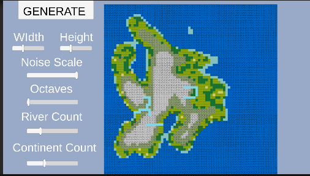

ゲーム学科卒業制作作品集
専門学校デジタルアーツ東京 -2023年度生-
一覧に戻る
地形生成シミュレータ

マップをプロシージャル生成するシミュレータです。
動作環境
Windows・・・
ダウンロード(.zip)
操作方法
視点移動：マウス左クリック
ズーム：マウスホイール
Generate：地形生成ボタン
Width,Height：マップサイズ変更
NoiseScale：地形の細かさを変更
Octaves：地形をより細かく
River Count：川の本数を変更
Continent Count : 生成される陸地の数を変更
参考URL集
空想地理.js
タイルマップと併用可能なプロシージャル生成パターン（前編）
タイルマップと併用可能なプロシージャル生成パターン（後編）
[Unity][C#Script] 自作スクリプトで自然な感じの地形を生成する(ダウンロードあり)
【Unity】ノイズと創造をつなぐ
Unity スクリプトリファレンス Mathf.PerlinNoise
シミュレーションRPG講座
Mathf-PerlinNoise - Unity スクリプトリファレンス
パーリンノイズ(Mathf.PerlinNoise() メソッド)の活用例
Topに戻る
一覧に戻る
Copyright (c) 2023-2025 専門学校デジタルアーツ東京 ゲーム学科 ARAISOUSHIROU
Copyright (c) 2019 The Bootstrap Authors